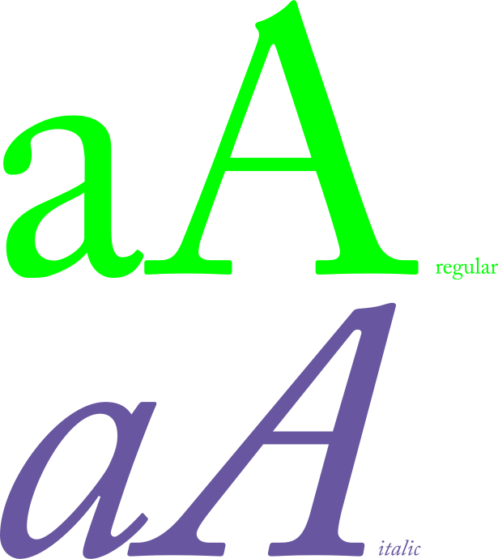

Adobe Caslon Pro

Le Caslon inclut les variations de régularité qui sont typiques des polices hollandaises transitionnelles baroques.
“De eer van een land is zijn karakter”
Proverbe hollandais
Il se caractérise par des jambages plutôt courts, des empattements pentus, un contraste relativement modéré, une texture robuste, et une modulation discrète des traits.
Spécimen de caractères
Carte de caractère
Ligatures conditionnelles
| ct | st |
Dénominateurs et indices scientifiques
| 0 ₀ | 1 ₁ | 2 ₂ | 3 ₃ | 4 ₄ | 5 ₅ | 6 ₆ | 7 ₇ | 8 ₈ | 9 ₉ |
Formes historiques
| ſ |
Ligatures standard
| Th | Ţh | Ťh | ff | fi | fj | fl | ffi | ffl | ffj | ſh | ſi | ſl | ſſ | ſt |
Dénominateurs
| ₀ | ₁ | ₂ | ₃ | ₄ | ₅ | ₆ | ₇ | ₈ | ₉ |
Ornements
| • | 1 | 2 | 3 | 4 | A | B | C | D | E | F | G | H | I | J | K | L | M | N | P | Q | S | U | V | W | X | Z | [ | ] | a | b | c | d | e | f | g | h | i | j | k | l | m | n | o | p | q | r | s | t | u | v | w | x | y | z |
Captales, petites capitales, bas-de-casse et exposants
| A | B | C | D | E | F | a | b | c | d | e | f | a | b | c | d | e | f | a | b | d | e | h | i |
Chiffres tabulaires et non-alignés
| 0 | 1 | 2 | 3 | 4 | 5 | 6 | 7 | 8 | 9 | 0 | 1 | 2 | 3 | 4 | 5 | 6 | 7 | 8 | 9 |